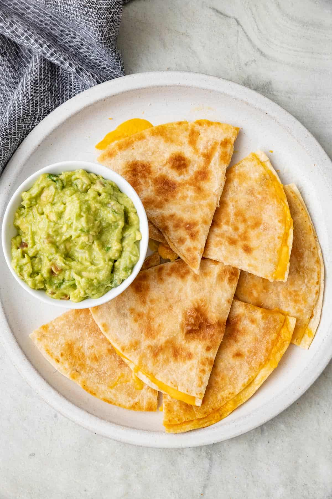

Quesadilla

This chicken quesadilla recipe is great to make for parties. Zesty chicken, cooked peppers, and melted cheese are a delightful combination.
Cut into wedges and serve with sour cream and salsa.
Ingredients
- Chicken
- Seasonings
- Vegetables
- Tortillas
- Cheese
Steps
- Season and cook the chicken
- Cook the vegetables with the chicken
- Layer mixture onto half of the tortilla
- Top mixture with cheese
- Fold tortilla and bake until cheese is melted
- Cut quesadilla into wedges and serve